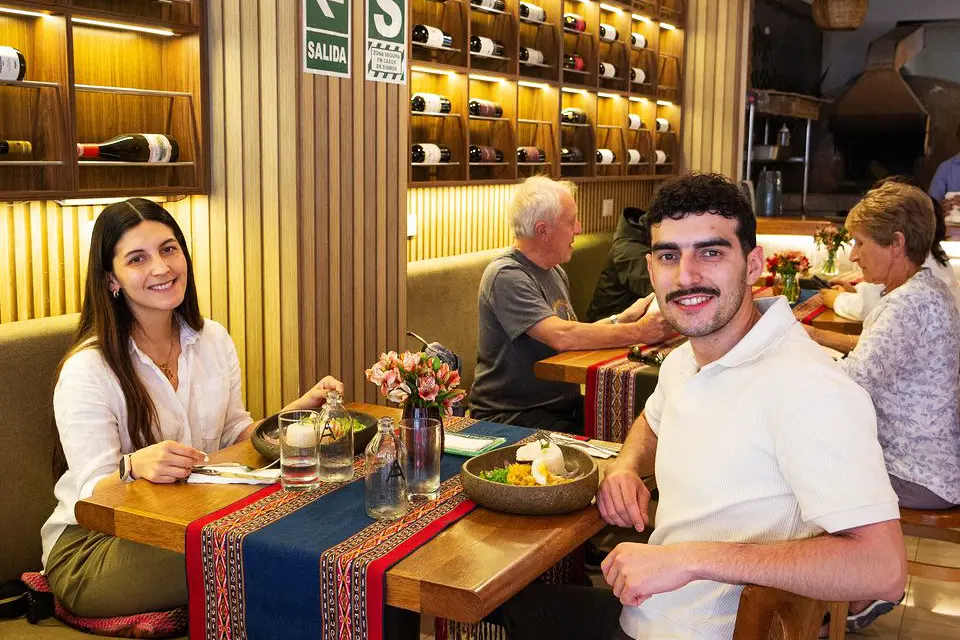

Disfruta de nuestros menús criollos preparados con el mejor sazón casero.
Restaurante Doña Leo abrió sus puertas en 2019 en el corazón del distrito de Santa Anita, con la misión de rescatar los auténticos sabores de la comida criolla peruana.
Desde entonces, nos hemos convertido en un lugar donde la tradición se mezcla con la calidez familiar. Cada plato que servimos refleja nuestro compromiso con la frescura de los ingredientes y el sabor casero que nos caracteriza.
Hoy seguimos creciendo gracias a nuestros clientes, quienes encuentran en Doña Leo no solo un restaurante, sino un espacio donde la comida une historias y familias.


Clásico arroz verde acompañado con jugosa presa de pollo.
S/ 18

Jugoso lomo salteado con cebolla, tomate y papas fritas.
S/ 22

Tradicional plato cremoso acompañado de arroz blanco.
S/ 20

Pescado fresco marinado en limón con cebolla, camote y choclo.
S/ 25

Pasta fresca en salsa de albahaca servida con jugoso bistec.
S/ 24

Cabrito tierno cocinado al estilo norteño con frijoles y arroz.
S/ 28
“Excelente atención y el mejor sabor criollo que he probado en Lima.”
“La comida estuvo deliciosa y la atención fue rápida, volveré pronto.”
“Excelente relación calidad-precio, los platos son abundantes y sabrosos.”
¡Encuéntranos en el corazón de Santa Anita!